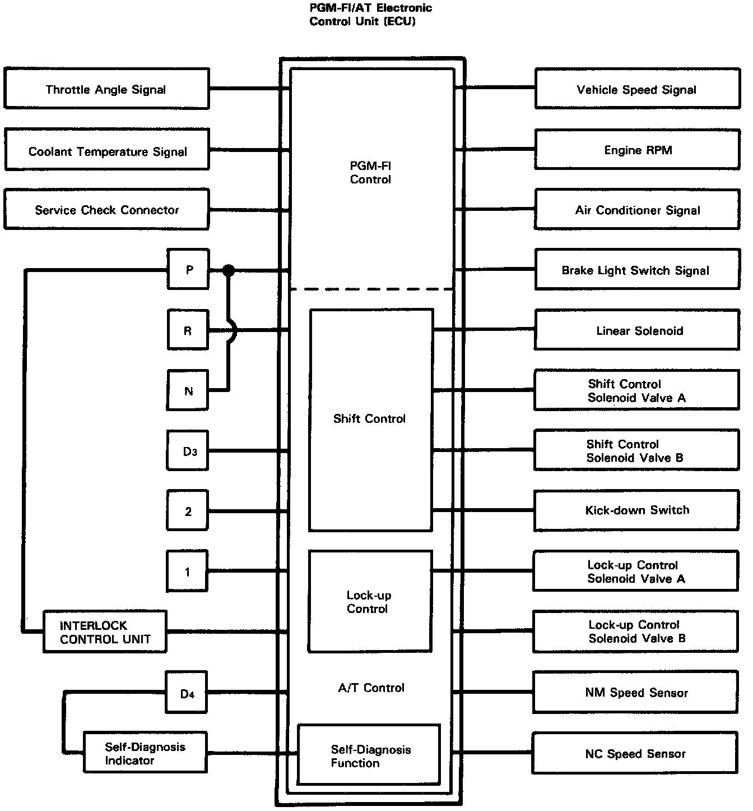
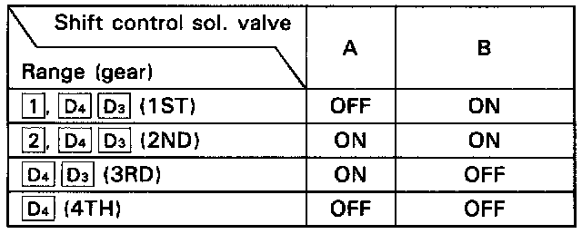
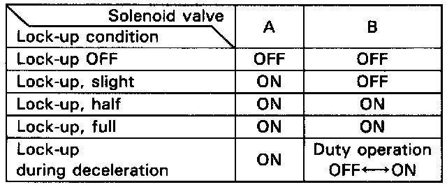

Electronic Control System

Electronic Control System
The electronic control system consists of the PGM-FI/AT Electronic Control Unit (ECU), sensors, a linear solenoid and 4 solenoid valves. Shifting and lock-up are electronically controlled for comfortable driving under all conditions. The ECU is located below the dashboard, under the front lower panel on the passenger's side.

Shift control
Shifting is related to engine torque through the linear solenoid used to operate throttle valve B which is controlled by the ECU. Getting a signal from each sensor, the ECU determines the appropriate shift point and activates shift control solenoid valves A and/or B.
The combination of driving signals to shift control solenoid valves A and B is shown in the table.

Lock-up control
From sensor input signals, the ECU determines whether to turn the lock-up ON or OFF and activates lock-up control solenoid valve A and/or B accordingly.
The combination of driving signals to lock-up control solenoid valves A and B is shown in the table.